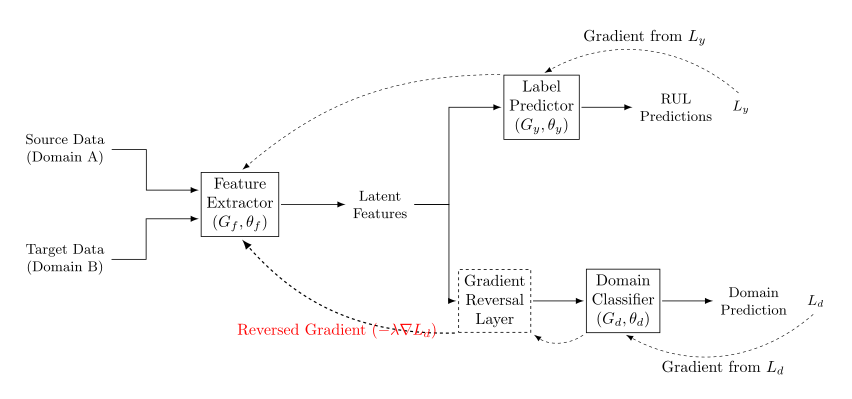

Domain Adversarial training for RUL prediction
A personal project on modern techniques in the analysis of time series.
(currently under development, but feel free to check it out and give feedback).
Introduction: what is Domain Adaptation?
RUL ("remaining useful life") prediction for devices is gaining increasing attention in the recent literature. One problem is that of estimating RUL in cases where there training and test data from the sensors come from two different distributions A and B: this is called Domain Adaptation (DA). This is relevant when the device is used in certain conditions (settings, temperature, pressure,...) where there is little or no available labeled data, but there is enough labeled data in some other conditions.

Domain Adversarial training is one approach used to address such situations. The typical scenario involves a first "feature extraction" block that maps information from the data to representations in a latent space, followed by a classification block that tries to classify whether the data come from distribution A or B. A gradient-reversal layer for this classifier makes possible for the extractor to only select features that are invariant across the two distributions. Modifications of this approach have been considered, like multi-domain sourcing, CDAN (conditional DANN), integration with attention and TCN,... See Wang et al. 2025 (preprint) for a recent review.

DANN structure and gradient reversal layer
To understand how Domain-Adversarial Neural Networks (DANN) achieve this domain-invariant representation, it is helpful to break the architecture down into three distinct components:
- The Feature Extractor \(G_f\): This initial block processes the raw, multivariate time series data — such as temperature, pressure, and vibration readings from a turbofan engine — and maps it into a latent feature space.
- The Label Predictor \(G_y\): This branch operates on the extracted features to perform the primary task. While traditional DANNs were heavily formulated around classification, in the context of RUL prediction, this is typically a regression network attempting to estimate the remaining life cycles of the equipment based on the source data.
- The Domain Classifier \(G_d\): This parallel branch also takes the latent features as input, but its sole job is to determine the origin of the data — identifying whether the current sample comes from the source distribution, Domain A, or the target distribution, Domain B.

The training process relies on a minimax game. The goal is to optimize the network parameters to minimize the error of the Label Predictor, ensuring accurate RUL estimates on the labeled source data, while simultaneously maximizing the error of the Domain Classifier, ensuring the extracted features contain no domain-specific signatures. We do this because we want the feature extractor to learn representations that are predictive of the RUL, but not predictive of the domain. If the domain classifier can easily distinguish between source and target features, it means the feature extractor is learning domain-specific features, which would hurt performance on the target domain. We only want our regressor to make estimates based on features that are common across both domains, so that it can generalize well to the target domain where we have no labels.
Mathematically, if we denote the parameters of these three blocks as \(\theta_f\), \(\theta_y\), and \(\theta_d\) respectively, we are seeking a saddle point \(\hat{\theta}_f, \hat{\theta}_y, \hat{\theta}_d\) such that:
\[ E(\hat{\theta}_f, \hat{\theta}_y, \theta_d) \leq E(\hat{\theta}_f, \hat{\theta}_y, \hat{\theta}_d) \leq E(\theta_f, \hat{\theta}_y, \hat{\theta}_d) \]where \(E\) represents the combined objective function. Implementing this minimax optimization within standard backpropagation frameworks introduces a structural challenge: how do you simultaneously minimize one loss and maximize another during a single training step?
This is elegantly solved by the Gradient Reversal Layer, or GRL. Inserted exactly between the Feature Extractor \(G_f\) and the Domain Classifier \(G_d\), the GRL acts as a simple identity function during the forward pass. This allows the extracted features to flow unchanged into the domain classifier so it can make its prediction. However, during the backward pass, the GRL multiplies the gradient by a negative constant \(-\lambda\) (that can be adjusted before and during training).
When the domain classifier calculates its loss and backpropagates to update its weights to get better at distinguishing between the different operational conditions, the reversed gradients flow back into the feature extractor. This forces the feature extractor to update its weights in the exact opposite direction, as to maximize the domain classifier's loss. Since the domain classifier is actively pushing for minimizing the loss, the Nash's equilibrium between the two layers is that the feature extractor does not let any information leak downstream that can be used to distinguish between the domains, effectively “unlearning” any feature that gives away the domain.
As training progresses, the extractor is pushed to produce representations that are highly predictive of the RUL, yet completely agnostic to the underlying environmental or operational domain, minimizing the bias coming from domain-specific variations.